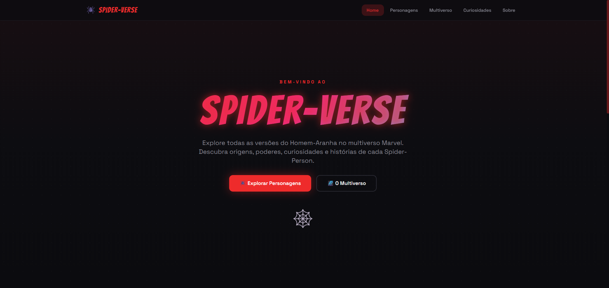

| Vitiatelas | Este trabalho consiste no desenvolvimento de um site com o objetivo de conscientizar e ajudar pessoas que sofrem com nomofobia, que é o medo ou ansiedade de ficar sem o celular. O site apresentará informações sobre o que é a nomofobia, seus sintomas, causas e possíveis impactos na vida das pessoas. Além disso, a plataforma poderá oferecer dicas, orientações e estratégias para reduzir o uso excessivo do celular, promovendo hábitos digitais mais saudáveis e equilibrados. O projeto também busca incentivar a reflexão sobre o uso da tecnologia no dia a dia e contribuir para o bem-estar digital dos usuários. | |
| SpiderVerse | Este trabalho consiste no desenvolvimento de um site dedicado ao universo do Homem-Aranha e ao conceito do Spider-Verse. O site apresentará informações sobre as diferentes versões do herói em vários universos, suas histórias, características e curiosidades. Além disso, a plataforma poderá mostrar personagens importantes do multiverso, filmes, quadrinhos e outras mídias relacionadas, permitindo que os visitantes explorem e conheçam melhor a diversidade de heróis que fazem parte desse universo. |  |